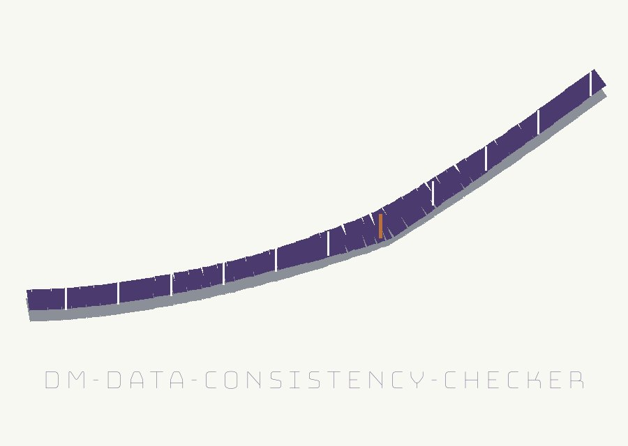

dm-data-consistency-checker: The Jet Stream's Discovery Flight
dm-data-consistency-checker: The Jet Stream's Discovery Flight names itself in that form throughout this page. The page is built as a plotting table read left to right, its sections laid like chart strips in sequence. Headings are set in Bungee Hairline in thunderhead violet. Reading text is set in Barlow in near black. Panels sit on a ground of rain grey lightened well toward white.

First Database Second Database, Masked Version
Two Files, One Relationship
Validated Before Checked
No Exit Promised for the Result
Plate one: the job
Verifies referential integrity across masked datasets. Useful for ensuring relationships between tables remain valid after masking, preventing data corruption and analysis errors. Uses SQL queries to check foreign key constraints. The tool sits among tools designed to generate or mask sensitive data with realistic-looking but meaningless values. No table name, column name, or file path from any real dataset appears on this page. Control names only are shown.
Plate two: usage, deliberately thin
./dm-data-consistency-checker [params]
That is the whole usage form in the source: an executable name followed by a bracketed params placeholder. No fuller call exists in the source to copy. The working form below is therefore assembled from the parameter list and nothing else, with both database paths and every table and column name rendered as placeholders.
./dm-data-consistency-checker --db_path1 <first_database_path> --db_path2 <second_database_path> --table_name <table_name> --foreign_key_column <foreign_key_column> --parent_table <parent_table> --parent_key_column <parent_key_column>
Plate three: the seven controls as chart strips
-h: Show help message and exit
Validation marker. --db_path1: Path to the first SQLite database file. This file is opened and validated as a readable SQLite database holding the named table, parent table, and columns. The run exits 1 when it cannot be read or lacks them.
Orphan check marker. --db_path2: Path to the second SQLite database file (masked version). The orphan check runs on this database.
--table_name: Name of the table to check for referential integrity.
--foreign_key_column: Name of the foreign key column in the table.
--parent_table: Name of the parent table referenced by the foreign key.
--parent_key_column: Name of the primary key column in the parent table.
Copper marks two strips only on this page, the validation strip and the orphan check strip, one accent each.
Plate four: no exit promised for the result
No exit code is stated for a run that finds orphans. No exit code is stated for a run that finds none. No exit code is documented for the check result itself, and this page invents none. No control is marked required, no default is printed for any control, and the second database gets no validation account to match the first. The only exit statement in the source is the exit 1 attached to the first database validation. A caller routing a pipeline around exit codes deserves those blanks drawn at full size, not papered over with plausible numbers.
Install
First the silences. The source install section states no requirements, mentions no SQLite to obtain, gives no build step, and sets no version floor. Then the one line, corrected on this site and labelled as a correction:
git clone https://github.com/ShadowGuard-AI/dm-data-consistency-checker
Correction labelled: the README prints the same line naming ShadowStrikeHQ. This site prints the hyphenated ShadowGuard-AI form. The record block at the end of this page keeps the printed spelling untouched.
License
The repository LICENSE file holds the MIT License. Its holder line is drawn here by contour only: a pen name in full, a parenthetical given name reduced to a single initial, and an account handle. The line itself is not reproduced and the initial is not expanded. The README licence section states no terms and consists of the line Copyright (c) ShadowStrikeHQ alone, naming an organisation where a reader might expect a holder.
Final record: the live README, pinned as found
 # dm-data-consistency-checker Verifies referential integrity across masked datasets. Useful for ensuring relationships between tables remain valid after masking, preventing data corruption and analysis errors. Uses SQL queries to check foreign key constraints. - Focused on Tools designed to generate or mask sensitive data with realistic-looking but meaningless values ## Install `git clone https://github.com/ShadowStrikeHQ/dm-data-consistency-checker` ## Usage `./dm-data-consistency-checker [params]` ## Parameters - `-h`: Show help message and exit - `--db_path1`: Path to the first SQLite database file. This file is opened and validated as a readable SQLite database holding the named table, parent table, and columns. The run exits 1 when it cannot be read or lacks them. - `--db_path2`: Path to the second SQLite database file (masked version). The orphan check runs on this database. - `--table_name`: Name of the table to check for referential integrity. - `--foreign_key_column`: Name of the foreign key column in the table. - `--parent_table`: Name of the parent table referenced by the foreign key. - `--parent_key_column`: Name of the primary key column in the parent table. ## License Copyright (c) ShadowStrikeHQ
Under the pinned sheets, a margin note marks the organisation naming in the install line and in the licence line as faulty. The sheet itself is not lifted, reprinted in altered form, or corrected in place in that record block.